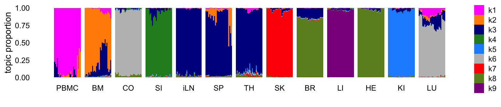
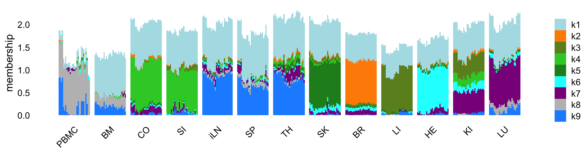
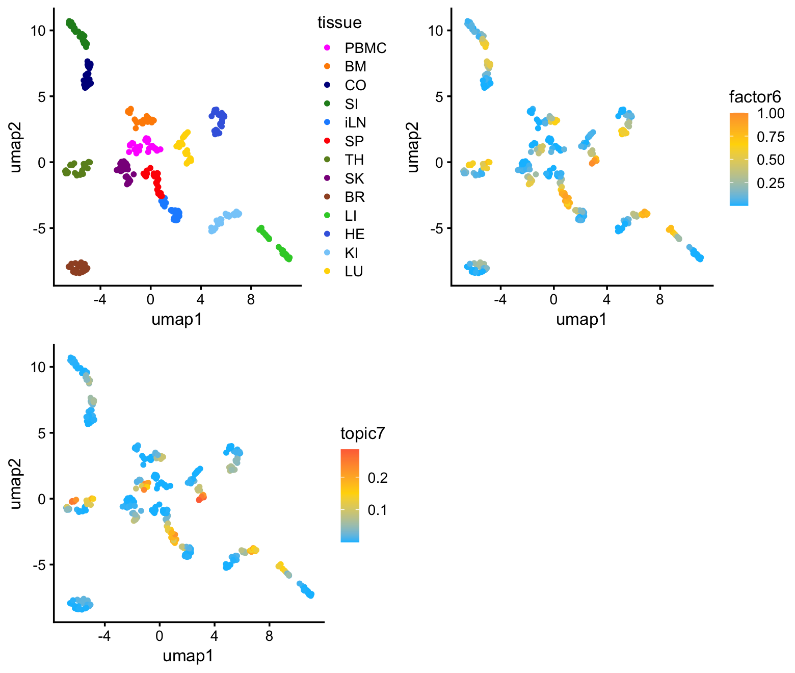
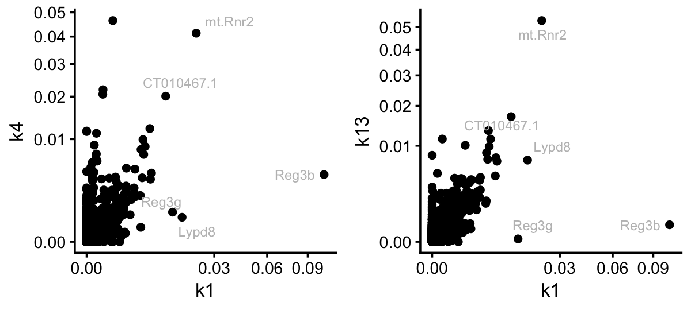
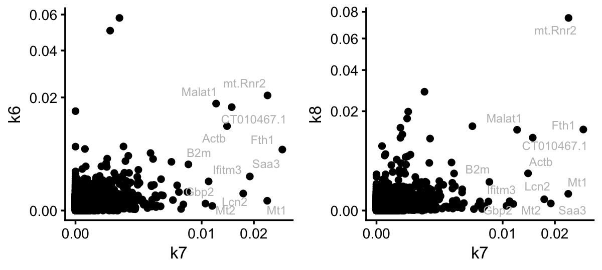
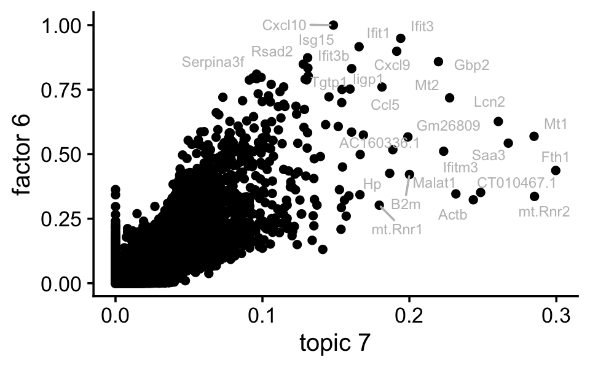
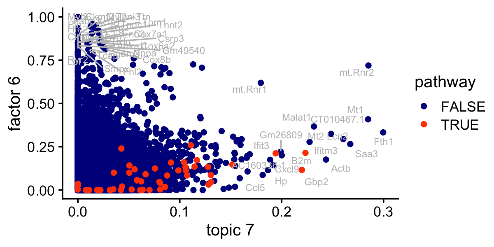

NMF analysis of the LPS data set
Peter Carbonetto
Last updated: 2025-07-16
Checks: 6 1
Knit directory:
single-cell-jamboree/analysis/
This reproducible R Markdown analysis was created with workflowr (version 1.7.1). The Checks tab describes the reproducibility checks that were applied when the results were created. The Past versions tab lists the development history.
Great! Since the R Markdown file has been committed to the Git repository, you know the exact version of the code that produced these results.
Great job! The global environment was empty. Objects defined in the global environment can affect the analysis in your R Markdown file in unknown ways. For reproduciblity it’s best to always run the code in an empty environment.
The command set.seed(1) was run prior to running the
code in the R Markdown file. Setting a seed ensures that any results
that rely on randomness, e.g. subsampling or permutations, are
reproducible.
Great job! Recording the operating system, R version, and package versions is critical for reproducibility.
- fit-topic-model
- fit-topic-model-k9
- flashier-nmf-k15
- flashier-nmf-k9
To ensure reproducibility of the results, delete the cache directory
lps_cache and re-run the analysis. To have workflowr
automatically delete the cache directory prior to building the file, set
delete_cache = TRUE when running wflow_build()
or wflow_publish().
Great job! Using relative paths to the files within your workflowr project makes it easier to run your code on other machines.
Great! You are using Git for version control. Tracking code development and connecting the code version to the results is critical for reproducibility.
The results in this page were generated with repository version 9682c18. See the Past versions tab to see a history of the changes made to the R Markdown and HTML files.
Note that you need to be careful to ensure that all relevant files for
the analysis have been committed to Git prior to generating the results
(you can use wflow_publish or
wflow_git_commit). workflowr only checks the R Markdown
file, but you know if there are other scripts or data files that it
depends on. Below is the status of the Git repository when the results
were generated:
Untracked files:
Untracked: analysis/lps_cache/
Untracked: analysis/lps_gsea_fl_nmf.csv
Untracked: analysis/mcf7_cache/
Untracked: analysis/pancreas_cytokine_S1_factors_cache/
Untracked: analysis/pancreas_cytokine_lsa_clustering_cache/
Untracked: data/GSE132188_adata.h5ad.h5
Untracked: data/GSE156175_RAW/
Untracked: data/GSE183010/
Untracked: data/Immune_ALL_human.h5ad
Untracked: data/pancreas_cytokine.RData
Untracked: data/pancreas_cytokine_lsa.RData
Untracked: data/pancreas_cytokine_lsa_v2.RData
Untracked: data/pancreas_endocrine.RData
Untracked: data/pancreas_endocrine_alldays.h5ad
Untracked: output/panc_cyto_lsa_res/
Unstaged changes:
Modified: analysis/pancreas_cytokine_S1_factors.Rmd
Modified: analysis/temp4.R
Note that any generated files, e.g. HTML, png, CSS, etc., are not included in this status report because it is ok for generated content to have uncommitted changes.
These are the previous versions of the repository in which changes were
made to the R Markdown (analysis/lps.Rmd) and HTML
(docs/lps.html) files. If you’ve configured a remote Git
repository (see ?wflow_git_remote), click on the hyperlinks
in the table below to view the files as they were in that past version.
| File | Version | Author | Date | Message |
|---|---|---|---|---|
| Rmd | 9682c18 | Peter Carbonetto | 2025-07-16 | wflow_publish("lps.Rmd", view = F, verbose = T) |
| html | 61bec23 | Peter Carbonetto | 2025-07-11 | Added some UMAP plots to the lps analysis. |
| Rmd | d35b952 | Peter Carbonetto | 2025-07-11 | wflow_publish("lps.Rmd", view = F, verbose = T) |
| Rmd | 9147de4 | Peter Carbonetto | 2025-07-04 | Fixed a bug in lps.Rmd. |
| Rmd | 3d8a2aa | Peter Carbonetto | 2025-07-04 | Added lps_gsea_fl_nmf.csv output. |
| html | e558f17 | Peter Carbonetto | 2025-07-04 | Ran wflow_publish("lps.Rmd"). |
| Rmd | 3d27ef8 | Peter Carbonetto | 2025-07-04 | Added GSEA of factor k6 to the lps analysis. |
| Rmd | cafd86d | Peter Carbonetto | 2025-07-04 | Implemented draft pathway analysis in temp4.R; next need to incorporate into lps.Rmd. |
| Rmd | b7aff59 | Peter Carbonetto | 2025-07-01 | Added some scatterplots to compare topics and factors in the lps analysis. |
| Rmd | 31afa30 | Peter Carbonetto | 2025-06-30 | Added some notes/thoughts to lps.Rmd. |
| Rmd | 23d0a0c | Peter Carbonetto | 2025-06-30 | Fixed one of the structure plots in the lps analysis. |
| Rmd | 842772b | Peter Carbonetto | 2025-06-30 | Added k=9 fits for the topic model and flashier NMF to the lps analysis. |
| Rmd | eb06be5 | Peter Carbonetto | 2025-06-30 | Added a structure plot for the k=9 topic model to the lps analysis. |
| Rmd | 3bfc932 | Peter Carbonetto | 2025-06-27 | Added a note to lps.Rmd. |
| Rmd | 53085f1 | Peter Carbonetto | 2025-06-26 | Working on adding a new topic model fit with k=9 topics in the lps example to illutrate some key ideas. |
| Rmd | ce314bb | Peter Carbonetto | 2025-06-09 | First try at running fastTopics and flashier on the pancreas_cytokine data, for mouse = S1 only; from this analysis I learned that I need to remove the mt and rp genes. |
| html | 4abf00c | Peter Carbonetto | 2025-06-06 | Ran wflow_publish("lps.Rmd"). |
| Rmd | f38b586 | Peter Carbonetto | 2025-06-06 | A small fix to the lps analysis. |
| Rmd | aae4257 | Peter Carbonetto | 2025-06-06 | A couple fixes to the lps analysis. |
| Rmd | 6cbad5f | Peter Carbonetto | 2025-06-06 | Added a structure plot to the lps analysis. |
| Rmd | 90d6c06 | Peter Carbonetto | 2025-06-06 | Improved the structure plots in the lps analysis. |
| Rmd | dac95b5 | Peter Carbonetto | 2025-06-06 | Made a few changes to the flashier fit in the lps analysis. |
| Rmd | 9e1f127 | Peter Carbonetto | 2025-06-05 | Added code to pancreas_cytokine analysis to prepare the scrna-seq data downloaded from geo. |
| Rmd | 8d945a1 | Peter Carbonetto | 2025-06-04 | Added flashier fit to lps analysis; need to revise this and the topic modeling result. |
| Rmd | dac6198 | Peter Carbonetto | 2025-06-04 | Working on topic modeling results for lps data. |
| Rmd | 8f39607 | Peter Carbonetto | 2025-06-04 | Added steps to the lps analysis to load and prepare the data. |
| html | 2bfef0b | Peter Carbonetto | 2025-06-04 | First build of the LPS analysis. |
| Rmd | 85adf3f | Peter Carbonetto | 2025-06-04 | wflow_publish("lps.Rmd") |
Here we will revisit the LPS data set that we analyzed using a topic model in the Takahama et al Nat Immunol paper (LPS = lipopolysaccharide). I believe some interesting insights can be gained by examining this data set more deeply.
Load packages used to process the data, perform the analyses, and create the plots.
library(Matrix)
library(readr)
library(data.table)
library(fastTopics)
library(NNLM)
library(ebnm)
library(flashier)
library(pathways)
library(singlecelljamboreeR)
library(ggplot2)
library(ggrepel)
library(cowplot)
library(rsvd)
library(uwot)Prepare the data for analysis with fastTopics and flashier
Load the RNA-seq counts:
read_lps_data <- function (file) {
counts <- fread(file)
class(counts) <- "data.frame"
genes <- counts[,1]
counts <- t(as.matrix(counts[,-1]))
colnames(counts) <- genes
samples <- rownames(counts)
samples <- strsplit(samples,"_")
samples <- data.frame(tissue = sapply(samples,"[[",1),
timepoint = sapply(samples,"[[",2),
mouse = sapply(samples,"[[",3))
samples <- transform(samples,
tissue = factor(tissue),
timepoint = factor(timepoint),
mouse = factor(mouse))
return(list(samples = samples,counts = counts))
}
out <- read_lps_data("../data/lps.csv.gz")
samples <- out$samples
counts <- out$counts
rm(out)Remove a sample that appears to be an outlier based on the NMF analyses:
i <- which(rownames(counts) != "iLN_d2_20")
samples <- samples[i,]
counts <- counts[i,]Remove genes that are expressed in fewer than 5 samples:
j <- which(colSums(counts > 0) > 4)
counts <- counts[,j]This is the dimension of the data set we will analyze:
dim(counts)
# [1] 363 33533For the Gaussian-based analyses, we will need the shifted log counts:
a <- 1
s <- rowSums(counts)
s <- s/mean(s)
shifted_log_counts <- log1p(counts/(a*s))Topic model (fastTopics)
First let’s fit a topic model with \(K = 9\) topics to the counts. This is probably an insufficient number of topics to fully capture the interesting structure in the data, but this is done on purpose since I want to illustrate how the topic model prioritizes the structure.
set.seed(1)
tm_k9 <- fit_poisson_nmf(counts,k = 9,init.method = "random",method = "em",
numiter = 20,verbose = "none",
control = list(numiter=4,nc=8,extrapolate=FALSE))
tm_k9 <- fit_poisson_nmf(counts,fit0 = tm_k9,method = "scd",numiter = 40,
control = list(numiter = 4,nc = 8,extrapolate = TRUE),
verbose = "none")
Warning: The above code chunk cached its results, but
it won’t be re-run if previous chunks it depends on are updated. If you
need to use caching, it is highly recommended to also set
knitr::opts_chunk$set(autodep = TRUE) at the top of the
file (in a chunk that is not cached). Alternatively, you can customize
the option dependson for each individual chunk that is
cached. Using either autodep or dependson will
remove this warning. See the
knitr cache options for more details.
Structure plot comparing the topics to the tissue types:
rows <- order(samples$timepoint)
topic_colors <- c("magenta","darkorange","darkblue","forestgreen",
"dodgerblue","gray","red","olivedrab","darkmagenta",
"sienna","limegreen","royalblue","lightskyblue",
"gold")
samples <- transform(samples,
tissue = factor(tissue,c("PBMC","BM","CO","SI","iLN","SP",
"TH","SK","BR","LI","HE","KI","LU")))
structure_plot(tm_k9,grouping = samples$tissue,gap = 4,
topics = 1:9,colors = topic_colors,
loadings_order = rows) +
labs(fill = "") +
theme(axis.text.x = element_text(angle = 0,hjust = 0.5))
| Version | Author | Date |
|---|---|---|
| e558f17 | Peter Carbonetto | 2025-07-04 |
Abbreviations used: BM = bone marrow; BR = brain; CO = colon; HE = heart; iLN = inguinal lymph node; KI = kidney; LI = liver; LU = lung; SI = small intestine; SK = skin; SP = spleen; TH = thymus.
The topics largely correspond to the different tissues, although because there are more tissues than topics, some tissues that are more similar to each other shared the same topic. It is also interesting that, for the most part, none of the topics are capturing changes downstream of the LPS treatment. So presumably these expression changes are more subtle than the differences in expression among the tissues.
Fit a topic model with \(K = 14\) topics to the counts:
set.seed(1)
tm <- fit_poisson_nmf(counts,k = 14,init.method = "random",method = "em",
numiter = 20,verbose = "none",
control = list(numiter = 4,nc = 8,extrapolate = FALSE))
tm <- fit_poisson_nmf(counts,fit0 = tm,method = "scd",numiter = 40,
control = list(numiter = 4,nc = 8,extrapolate = TRUE),
verbose = "none")
Warning: The above code chunk cached its results, but
it won’t be re-run if previous chunks it depends on are updated. If you
need to use caching, it is highly recommended to also set
knitr::opts_chunk$set(autodep = TRUE) at the top of the
file (in a chunk that is not cached). Alternatively, you can customize
the option dependson for each individual chunk that is
cached. Using either autodep or dependson will
remove this warning. See the
knitr cache options for more details.
Structure plot comparing the topics to the tissue types:
structure_plot(tm,grouping = samples$tissue,gap = 4,
topics = 1:14,colors = topic_colors,
loadings_order = rows) +
labs(fill = "") +
theme(axis.text.x = element_text(angle = 0,hjust = 0.5),
legend.key.height = unit(0.01,"cm"),
legend.key.width = unit(0.2,"cm"),
legend.text = element_text(size = 6))
This next structure plot better highlights the topics that are capturing expression changes over time, some being presumably driven by the LPS-induced sepsis:
topic_colors <- c("magenta","gray50","gray65","gray40",
"gray85","gray75","red","gray80","gray90",
"gray60","limegreen","gray70","gray55",
"gold")
structure_plot(tm,grouping = samples$tissue,gap = 4,
topics = 1:14,colors = topic_colors,
loadings_order = rows) +
labs(fill = "") +
theme(axis.text.x = element_text(angle = 0,hjust = 0.5),
legend.key.height = unit(0.01,"cm"),
legend.key.width = unit(0.2,"cm"),
legend.text = element_text(size = 6))
EBNMF (flashier)
Similar to the topic modeling analysis, let’s start by fitting an EBNMF to the shifted log counts using flashier, first with \(K = 9\). Since the greedy initialization does not seem to work well in this example, I’ll use a different initialization strategy: obtain a “good” initialization using the NNLM package, then use this initialization to fit a NMF using flashier. This approach is implemented in the following function:
Now fit an NMF to the shifted log counts, with \(K = 9\):
set.seed(1)
n <- nrow(shifted_log_counts)
x <- rpois(1e7,1/n)
s1 <- sd(log(x + 1))
set.seed(1)
fl_nmf_k9 <- flashier_nmf(shifted_log_counts,k = 9,n.threads = 8,
var_type = 2,S = s1)
# Warning in c_nnmf(A, as.integer(k), init.mask$Wi, init.mask$Hi, init.mask$Wm, :
# Target tolerance not reached. Try a larger max.iter.
# Backfitting 9 factors (tolerance: 1.81e-01)...
# Difference between iterations is within 1.0e+03...
# Difference between iterations is within 1.0e+02...
# --Maximum number of iterations reached!
# Wrapping up...
# Done.
# Backfitting 9 factors (tolerance: 1.81e-01)...
# Difference between iterations is within 1.0e+01...
# Difference between iterations is within 1.0e+00...
# --Maximum number of iterations reached!
# Wrapping up...
# Done.
Warning: The above code chunk cached its results, but
it won’t be re-run if previous chunks it depends on are updated. If you
need to use caching, it is highly recommended to also set
knitr::opts_chunk$set(autodep = TRUE) at the top of the
file (in a chunk that is not cached). Alternatively, you can customize
the option dependson for each individual chunk that is
cached. Using either autodep or dependson will
remove this warning. See the
knitr cache options for more details.
Structure plot comparing the topics to the tissue types:
rows <- order(samples$timepoint)
topic_colors <- c("powderblue","dodgerblue","olivedrab","limegreen",
"forestgreen","red","darkmagenta","gray","darkorange",
"cyan","royalblue","darkblue","lightskyblue",
"gold","sienna")
L <- ldf(fl_nmf_k9,type = "i")$L
structure_plot(L,grouping = samples$tissue,gap = 4,
topics = 1:9,colors = topic_colors,
loadings_order = rows) +
labs(fill = "",y = "membership")
| Version | Author | Date |
|---|---|---|
| e558f17 | Peter Carbonetto | 2025-07-04 |
Like the topic model, the EBNMF model with \(K = 9\) does not capture any changes downstream of the LPS-induced sepsis.
Next fit an NMF to the shifted log counts using flashier, with \(K = 15\):
set.seed(1)
fl_nmf <- flashier_nmf(shifted_log_counts,k = 15,n.threads = 8,S = s1)
# Backfitting 15 factors (tolerance: 1.81e-01)...
# Difference between iterations is within 1.0e+03...
# --Maximum number of iterations reached!
# Wrapping up...
# Done.
# Backfitting 15 factors (tolerance: 1.81e-01)...
# Difference between iterations is within 1.0e+02...
# Difference between iterations is within 1.0e+01...
# --Maximum number of iterations reached!
# Wrapping up...
# Done.
Warning: The above code chunk cached its results, but
it won’t be re-run if previous chunks it depends on are updated. If you
need to use caching, it is highly recommended to also set
knitr::opts_chunk$set(autodep = TRUE) at the top of the
file (in a chunk that is not cached). Alternatively, you can customize
the option dependson for each individual chunk that is
cached. Using either autodep or dependson will
remove this warning. See the
knitr cache options for more details.
Structure plot comparing the factors to the tissue types:
L <- ldf(fl_nmf,type = "i")$L
structure_plot(L,grouping = samples$tissue,gap = 4,
topics = 1:15,colors = topic_colors,
loadings_order = rows) +
labs(fill = "",y = "membership") +
theme(axis.text.x = element_text(angle = 0,hjust = 0.5),
legend.key.height = unit(0.01,"cm"),
legend.key.width = unit(0.25,"cm"),
legend.text = element_text(size = 7))
This next structure plot better highlights the topics that capture the processes that are driven or may be driven by LPS-induced sepsis:
rows <- order(samples$timepoint)
topic_colors <- c("gray95","gray70","gray80","gray50",
"gray60","red","gray75","gray","gray85",
"gray90","gray65","darkblue","gray45",
"gray35","gray75")
L <- ldf(fl_nmf,type = "i")$L
structure_plot(L,grouping = samples$tissue,gap = 4,
topics = 1:15,colors = topic_colors,
loadings_order = rows) +
labs(fill = "",y = "membership") +
theme(axis.text.x = element_text(angle = 0,hjust = 0.5),
legend.key.height = unit(0.01,"cm"),
legend.key.width = unit(0.25,"cm"),
legend.text = element_text(size = 7))
Comparison with UMAP
Here I project the samples onto a 2-d embedding using UMAP to show that this LPS-related substructure is not obvious from a UMAP plot.
set.seed(1)
U <- rsvd(shifted_log_counts,k = 40)$u
Y <- umap(U,n_neighbors = 20,metric = "cosine",min_dist = 0.3,
n_threads = 8,verbose = TRUE)
# 21:28:48 UMAP embedding parameters a = 0.9922 b = 1.112
# 21:28:48 Read 363 rows and found 40 numeric columns
# 21:28:48 Using Annoy for neighbor search, n_neighbors = 20
# 21:28:48 Building Annoy index with metric = cosine, n_trees = 50
# 0% 10 20 30 40 50 60 70 80 90 100%
# [----|----|----|----|----|----|----|----|----|----|
# **************************************************|
# 21:28:48 Writing NN index file to temp file /var/folders/9b/ck4lp8s140lcksryyh4dppdr0000gp/T//Rtmp6OUPBv/file4a9153faa2
# 21:28:48 Searching Annoy index using 8 threads, search_k = 2000
# 21:28:48 Annoy recall = 100%
# 21:28:48 Commencing smooth kNN distance calibration using 8 threads with target n_neighbors = 20
# 21:28:48 Initializing from normalized Laplacian + noise (using irlba)
# 21:28:48 Commencing optimization for 500 epochs, with 7880 positive edges
# 21:28:48 Using rng type: pcg
# 21:28:48 Optimization finished
x <- Y[,1]
y <- Y[,2]
samples$umap1 <- x
samples$umap2 <- yI color the samples in the UMAP plot by tissue (top-left) and by membership to factor 6 (top-right, bottom-left):
tissue_colors <- c("magenta","darkorange","darkblue","forestgreen",
"dodgerblue","red","olivedrab","darkmagenta",
"sienna","limegreen","royalblue","lightskyblue",
"gold")
L <- ldf(fl_nmf,type = "i")$L
colnames(L) <- paste0("k",1:15)
pdat <- samples
pdat$factor6 <- L[,"k6"]
pdat$topic7 <- poisson2multinom(tm)$L[,"k7"]
p1 <- ggplot(pdat,aes(x = umap1,y = umap2,color = tissue)) +
geom_point(size = 1) +
scale_color_manual(values = tissue_colors) +
theme_cowplot(font_size = 10)
p2 <- ggplot(pdat,aes(x = umap1,y = umap2,color = factor6)) +
geom_point(size = 1) +
scale_color_gradient2(low = "deepskyblue",mid = "gold",high = "tomato",
midpoint = 0.66) +
theme_cowplot(font_size = 10)
p3 <- ggplot(pdat,aes(x = umap1,y = umap2,color = topic7)) +
geom_point(size = 1) +
scale_color_gradient2(low = "deepskyblue",mid = "gold",high = "tomato",
midpoint = 0.15) +
theme_cowplot(font_size = 10)
plot_grid(p1,p2,p3,nrow = 2,ncol = 2)
| Version | Author | Date |
|---|---|---|
| 61bec23 | Peter Carbonetto | 2025-07-11 |
As expected, the predominant structure is due to the different tissues, with more similar tissues clustering together. There is also some more subtle structure within each cluster that appears to correspond well with factor 6 (and topic 7). So althought the UMAP does seem to reveal the sepsis-related structure, it cannot isolate the sepsis-related gene expression signature.
Factors isolating responses to LPS-induced sepsis
From the Structure plots, it appears that topic 7, and possibly topic 1, are capturing processes activated by LPS. However, I conjecture that it is difficult to determine which genes should members of topic 1 and which are members of the colon and small intensine topics. Indeed, topic 1 shares many genes with these two topics:
pdat <- cbind(data.frame(gene = colnames(counts)),
poisson2multinom(tm)$F)
rows <- which(pdat$k1 < 0.01)
pdat[rows,"gene"] <- ""
p1 <- ggplot(pdat,aes(x = k1,y = k4,label = gene)) +
geom_point() +
geom_text_repel(color = "gray",size = 2.5,max.overlaps = Inf) +
scale_x_continuous(trans = "sqrt") +
scale_y_continuous(trans = "sqrt") +
theme_cowplot(font_size = 10)
p2 <- ggplot(pdat,aes(x = k1,y = k13,label = gene)) +
geom_point() +
geom_text_repel(color = "gray",size = 2.5,max.overlaps = Inf) +
scale_x_continuous(trans = "sqrt") +
scale_y_continuous(trans = "sqrt") +
theme_cowplot(font_size = 10)
plot_grid(p1,p2,nrow = 1,ncol = 2)
Still, it is interesting that three genes, Reg3b, Reg3g and Lypd8, stand out in topic 1 as distinct from the colon and SI topics. Let’s now contrast this to the situation for topic 7:
pdat <- cbind(data.frame(gene = colnames(counts)),
poisson2multinom(tm)$F)
rows <- which(pdat$k7 < 0.008)
pdat[rows,"gene"] <- ""
p1 <- ggplot(pdat,aes(x = k7,y = k6,label = gene)) +
geom_point() +
geom_text_repel(color = "gray",size = 2.5,max.overlaps = Inf) +
scale_x_continuous(trans = "sqrt") +
scale_y_continuous(trans = "sqrt") +
theme_cowplot(font_size = 10)
p2 <- ggplot(pdat,aes(x = k7,y = k8,label = gene)) +
geom_point() +
geom_text_repel(color = "gray",size = 2.5,max.overlaps = Inf) +
scale_x_continuous(trans = "sqrt") +
scale_y_continuous(trans = "sqrt") +
theme_cowplot(font_size = 10)
plot_grid(p1,p2,nrow = 1,ncol = 2)
For illustration, I compared topic 7 to the kidney and lung topics. The key point here is that the topic model has selected genes for topic 7 that are very independent of the tissue topics. So this looks quite promising. Let’s now see if the result is similar for the EBNMF model fitted to the shifted log counts:
F <- ldf(fl_nmf,type = "i")$F
colnames(F) <- paste0("k",1:15)
pdat <- data.frame(tm = poisson2multinom(tm)$F[,"k7"],
nmf = F[,"k6"],
gene = rownames(F))
rows <- which(with(pdat,tm < 0.005 & nmf < 0.8))
pdat[rows,"gene"] <- ""
ggplot(pdat,aes(x = (tm)^(1/3),y = nmf,label = gene)) +
geom_point() +
geom_text_repel(color = "gray",size = 2.5,max.overlaps = Inf) +
labs(x = "topic 7",y = "factor 6") +
theme_cowplot(font_size = 12)
Indeed, factor 6 and topic 7 are cpaturing very similar expression patterns.
Next I ran GSEA on the on factor 6. (Running GSEA on topic 7 is complicated by the fact that it would be better to “shrink” the estimates before running GSEA, whereas this was automatically done for EBNMF result.)
data(gene_sets_mouse)
gene_sets <- gene_sets_mouse$gene_sets
gene_info <- gene_sets_mouse$gene_info
gene_set_info <- gene_sets_mouse$gene_set_info
j <- which(with(gene_sets_mouse$gene_set_info,
(database == "MSigDB-C2" &
grepl("CP",sub_category_code,fixed = TRUE)) |
(database == "MSigDB-C5") &
grepl("GO",sub_category_code,fixed = TRUE)))
genes <- sort(intersect(rownames(F),gene_info$Symbol))
i <- which(is.element(gene_info$Symbol,genes))
gene_info <- gene_info[i,]
gene_set_info <- gene_set_info[j,]
gene_sets <- gene_sets[i,j]
rownames(gene_sets) <- gene_info$Symbol
rownames(gene_set_info) <- gene_set_info$id
gene_set_info <- gene_set_info[,-2]
F <- ldf(fl_nmf,type = "i")$F
colnames(F) <- paste0("k",1:15)
gsea_fl_nmf <- singlecelljamboreeR::perform_gsea(F[,"k6"],gene_sets,
gene_set_info,L = 15,
verbose = FALSE)
out <- gsea_fl_nmf$selected_gene_sets
out$top_genes <- sapply(out$top_genes,function (x) paste(x,collapse = " "))
write_csv(out,"lps_gsea_fl_nmf.csv",quote = "none")The top gene set is the IFN-\(\alpha/\beta\) signaling pathway, but other gene sets clearly relate to inflammation and immune system function:
print(gsea_fl_nmf$selected_gene_sets[c(2:7,9)],n = Inf)
# # A tibble: 17 × 7
# CS gene_set lbf pip coef genes name
# <fct> <chr> <dbl> <dbl> <dbl> <dbl> <chr>
# 1 L4 M973 292. 1 0.257 49 REACTOME_INTERFERON_ALPHA_BETA_SIGN…
# 2 L1 M16779 181. 0.999 0.0821 306 GO_RESPONSE_TO_VIRUS
# 3 L2 M15265 114. 1.000 0.0886 171 GO_RESPONSE_TO_INTERFERON_GAMMA
# 4 L10 M18914 73.4 1 0.245 15 GO_CXCR_CHEMOKINE_RECEPTOR_BINDING
# 5 L3 M27605 67.3 1 0.138 44 REACTOME_INTERLEUKIN_10_SIGNALING
# 6 L9 M13436 51.5 1.000 0.0600 186 GO_RESPONSE_TO_INTERLEUKIN_1
# 7 L6 M27685 51.0 0.514 0.0581 194 REACTOME_RRNA_PROCESSING
# 8 L6 M10214 51.0 0.484 0.0476 291 GO_RIBOSOME_BIOGENESIS
# 9 L7 M39818 41.6 1.000 0.0462 264 WP_IL18_SIGNALING_PATHWAY
# 10 L11 M10009 41.1 1.000 0.0383 382 GO_MYELOID_CELL_DIFFERENTIATION
# 11 L5 M16728 39.2 0.882 0.0407 324 GO_RESPONSE_TO_MOLECULE_OF_BACTERIA…
# 12 L5 M15261 39.2 0.118 0.0387 345 GO_REGULATION_OF_INFLAMMATORY_RESPO…
# 13 L13 M13922 38.3 0.999 0.0439 274 GO_INTRINSIC_APOPTOTIC_SIGNALING_PA…
# 14 L8 M19119 37.9 1.000 0.0409 313 GO_CADHERIN_BINDING
# 15 L15 M2251 34.5 1.000 0.0398 307 GO_EXTERNAL_SIDE_OF_PLASMA_MEMBRANE
# 16 L12 M39785 32.1 0.997 -0.151 20 WP_OVERVIEW_OF_INTERFERONSMEDIATED_…
# 17 L14 M17358 31.8 0.971 0.0538 157 GO_SPECIFIC_GRANULEThis is the same scatterplot as the one just above, but with the genes in the IFN-\(\alpha/\beta\) signaling pathway highlighted:
pdat$pathway <- FALSE
pathway_genes <- names(which(gene_sets[,"M973"] > 0))
pdat[pathway_genes,"pathway"] <- TRUE
pdat <- pdat[order(pdat$pathway),]
ggplot(pdat,aes(x = (tm)^(1/3),y = nmf,label = gene,color = pathway)) +
geom_point() +
geom_text_repel(color = "gray",size = 2.5,max.overlaps = Inf) +
scale_color_manual(values = c("darkblue","orangered")) +
labs(x = "topic 7",y = "factor 6") +
theme_cowplot(font_size = 12)
sessionInfo()
# R version 4.3.3 (2024-02-29)
# Platform: aarch64-apple-darwin20 (64-bit)
# Running under: macOS 15.5
#
# Matrix products: default
# BLAS: /Library/Frameworks/R.framework/Versions/4.3-arm64/Resources/lib/libRblas.0.dylib
# LAPACK: /Library/Frameworks/R.framework/Versions/4.3-arm64/Resources/lib/libRlapack.dylib; LAPACK version 3.11.0
#
# locale:
# [1] en_US.UTF-8/en_US.UTF-8/en_US.UTF-8/C/en_US.UTF-8/en_US.UTF-8
#
# time zone: America/Chicago
# tzcode source: internal
#
# attached base packages:
# [1] stats graphics grDevices utils datasets methods base
#
# other attached packages:
# [1] uwot_0.2.3 rsvd_1.0.5
# [3] cowplot_1.1.3 ggrepel_0.9.6
# [5] ggplot2_3.5.2 singlecelljamboreeR_0.1-28
# [7] pathways_0.1-20 flashier_1.0.56
# [9] ebnm_1.1-34 NNLM_0.4.4
# [11] fastTopics_0.7-25 data.table_1.17.6
# [13] readr_2.1.5 Matrix_1.6-5
#
# loaded via a namespace (and not attached):
# [1] pbapply_1.7-2 rlang_1.1.6 magrittr_2.0.3
# [4] git2r_0.33.0 RcppAnnoy_0.0.22 horseshoe_0.2.0
# [7] matrixStats_1.2.0 susieR_0.14.6 compiler_4.3.3
# [10] vctrs_0.6.5 reshape2_1.4.4 RcppZiggurat_0.1.6
# [13] quadprog_1.5-8 stringr_1.5.1 pkgconfig_2.0.3
# [16] crayon_1.5.3 fastmap_1.2.0 labeling_0.4.3
# [19] utf8_1.2.6 promises_1.3.3 rmarkdown_2.29
# [22] tzdb_0.4.0 bit_4.0.5 purrr_1.0.4
# [25] Rfast_2.1.0 xfun_0.52 cachem_1.1.0
# [28] trust_0.1-8 jsonlite_2.0.0 progress_1.2.3
# [31] later_1.4.2 reshape_0.8.9 BiocParallel_1.36.0
# [34] irlba_2.3.5.1 parallel_4.3.3 prettyunits_1.2.0
# [37] R6_2.6.1 bslib_0.9.0 stringi_1.8.7
# [40] RColorBrewer_1.1-3 SQUAREM_2021.1 jquerylib_0.1.4
# [43] Rcpp_1.1.0 knitr_1.50 R.utils_2.12.3
# [46] httpuv_1.6.14 splines_4.3.3 tidyselect_1.2.1
# [49] dichromat_2.0-0.1 yaml_2.3.10 codetools_0.2-19
# [52] lattice_0.22-5 tibble_3.3.0 plyr_1.8.9
# [55] withr_3.0.2 evaluate_1.0.4 Rtsne_0.17
# [58] RcppParallel_5.1.10 pillar_1.11.0 whisker_0.4.1
# [61] plotly_4.11.0 softImpute_1.4-3 generics_0.1.4
# [64] vroom_1.6.5 rprojroot_2.0.4 invgamma_1.2
# [67] truncnorm_1.0-9 hms_1.1.3 scales_1.4.0
# [70] ashr_2.2-66 gtools_3.9.5 RhpcBLASctl_0.23-42
# [73] glue_1.8.0 scatterplot3d_0.3-44 lazyeval_0.2.2
# [76] tools_4.3.3 fgsea_1.35.4 fs_1.6.6
# [79] fastmatch_1.1-6 grid_4.3.3 tidyr_1.3.1
# [82] colorspace_2.1-0 deconvolveR_1.2-1 cli_3.6.5
# [85] Polychrome_1.5.1 workflowr_1.7.1 mixsqp_0.3-54
# [88] viridisLite_0.4.2 dplyr_1.1.4 gtable_0.3.6
# [91] R.methodsS3_1.8.2 sass_0.4.10 digest_0.6.37
# [94] htmlwidgets_1.6.4 farver_2.1.2 R.oo_1.26.0
# [97] htmltools_0.5.8.1 lifecycle_1.0.4 httr_1.4.7
# [100] bit64_4.0.5